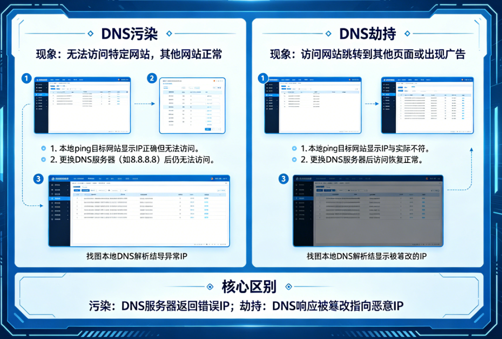

香港机房
香港机房 日本机房
日本机房 美国机房
美国机房 新加坡机房
新加坡机房一、先把概念讲清楚：很多人分不清“污染”和“劫持”
在实际网络故障排查中，DNS相关问题是最容易被误判的一类故障，尤其是在访问国外网站、企业跨境专线、或者做服务器运维时，经常会听到“是不是DNS被劫持了”“是不是DNS污染了”这样的判断，但真正能说清两者区别的人并不多。很多时候用户只是“网站打不开”或者“解析结果不对”，就直接归因到DNS问题，但实际上网络链路、运营商策略、甚至本地缓存都可能造成类似现象。
从技术层面来说，DNS污染（DNS Poisoning / Spoofing）更多是指在DNS解析过程中返回了“错误但看似正常”的解析结果，这个结果可能来自中间链路的伪造响应，例如被注入了虚假IP地址，导致用户访问被导向错误服务器。而DNS劫持（DNS Hijacking）则更偏向“控制权被改变”，也就是说你的DNS请求被强制转发到某个指定解析服务器，甚至本地路由器、运营商网关、企业网关直接改写了DNS行为。
简单理解可以这样区分：污染更像“路上有人给你递了一张假地图”，而劫持更像“你本来要去问路的窗口被换成了另一个人”。
二、第一步判断：看“解析结果是否一致”
判断DNS问题的第一步不是抓包，也不是换网络，而是做“多节点解析对比”。可以使用 nslookup 或 dig 分别对比不同DNS源（运营商DNS、8.8.8.8、1.1.1.1）。
如果解析结果明显不一致，就说明存在异常可能。但要注意CDN本身的分流机制，否则容易误判。
判断关键点是：返回IP是否逻辑合理，是否指向陌生机房或无关业务。
三、第二步判断：看“是否存在DNS服务器被替换”
在Windows中可以通过：
ipconfig /all
查看DNS是否被修改。如果出现陌生DNS IP（尤其是局域网网关或未知地址），需要重点怀疑劫持。
在路由器层面，更常见的是“DNS强制转发”，用户虽然设置了8.8.8.8，但实际仍被转发到运营商DNS。
抓包可以确认真实请求路径，如果目标DNS与配置不一致，则属于典型劫持行为。
四、第三步判断：看TTL与响应行为异常
DNS记录中的TTL可以反映解析稳定性。
正常：300 / 600 / 3600
异常污染：1 / 0 或频繁变化
污染通常表现为TTL极低或不稳定，因为伪造响应无法长期缓存。
劫持则通常TTL正常，但返回结果固定错误。
五、第四步判断：从访问行为反推问题
DNS问题最终一定会反映到访问层面，例如：
网站间歇性打不开
IP访问正常但域名访问失败
HTTPS证书异常
不同网络访问结果不一致
如果IP访问正常，但域名访问异常，基本可以锁定DNS问题。

六、第五步判断：跨网络验证法
这是最实用的工程方法：在不同网络环境下对比访问结果。
如果仅某一个网络异常，而其他网络正常，则说明该网络DNS存在问题。
例如公司网络无法访问，但手机热点正常，通常就是企业DNS策略或劫持。
七、第六步判断：抓包最终确认
使用Wireshark可以直接看到DNS请求行为：
请求是否发往正确DNS服务器
响应是否来自同一源
Transaction ID是否匹配
是否存在伪造响应
污染特征：返回内容被篡改
劫持特征：请求路径被改变
八、快速结论判断逻辑
偏劫持：
DNS服务器被替换
同网络所有设备异常
解析结果长期固定错误
偏污染：
解析结果不一致
IP随机变化
TTL异常低
九、真实情况：DNS问题通常不是单点问题
在真实网络中，DNS问题往往只是链路问题的一部分，包括路由绕行、运营商策略、跨境链路质量等都会影响解析表现。
因此DNS不能孤立看待，而是要结合网络链路整体分析。
本质上，DNS污染和DNS劫持只是两种不同干扰方式，核心在于通过解析对比、网络验证和抓包分析，把现象还原为真实机制。